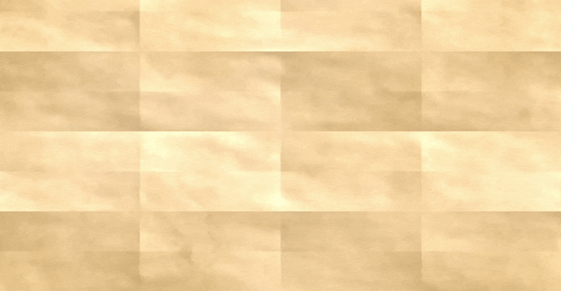

Roguelike Map Generator
Plugin to generate a traversable UI map.
Commonly used in roguelikes.
I built a plugin that generates traversable UI maps in a style that is common in roguelikes (Most notably Slay The Spire).
I focused on making it as simple and flexible as possible.
I designed it in a way so that the user designs the widget, meaning they have full control of the behaviour of the nodes.
The plugin only decides:
1. Where the nodes spawn
2. Which type of node
3. The paths between nodes
The random generation can be controlled with a settings asset the user creates. The user can freely switch between them if they want different kinds of maps for different points in the game.